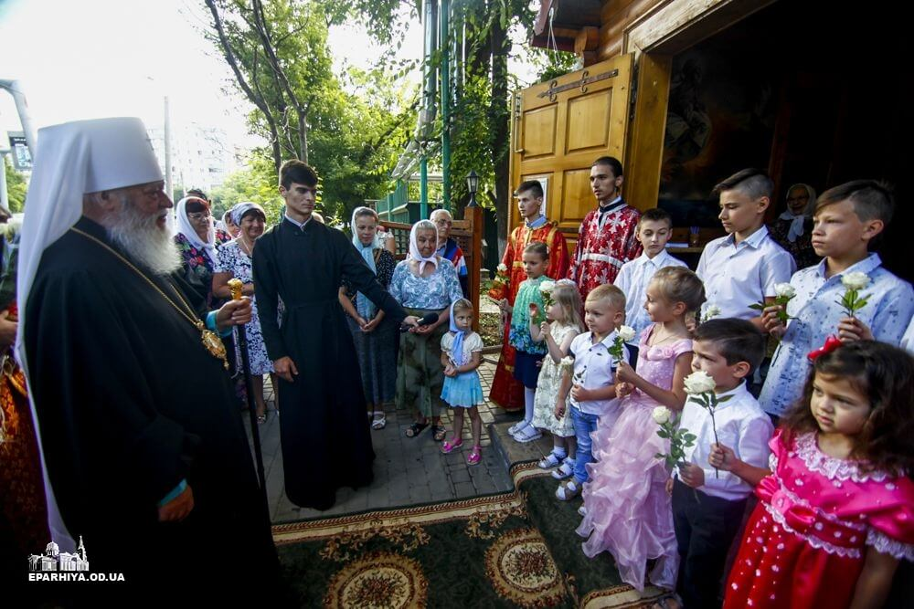

Воскресная школа
Приглашаем Ваших детей от 4 до 12 лет в Воскресную школу при храме Святой Великой Преподобной мученицы Великой Княгини Елисаветы. Телефон: +7 (917) 585-89-64
ПодробнееВоскресная школа для людей с проблемами слуха
Приглашаем Ваших детей с проблемами слуха в Воскресную школу при храме Святой Великой Преподобной мученицы Великой Княгини Елисаветы. Телефон: +7 (917) 585-89-64
Подробнее